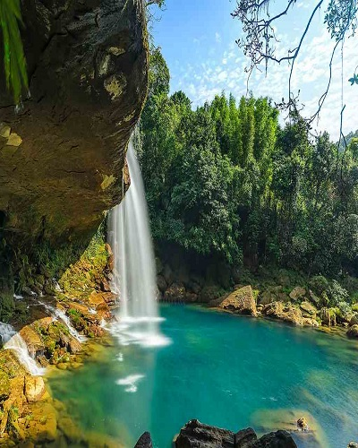
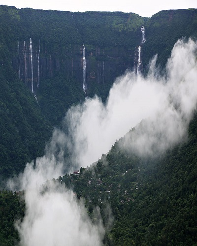
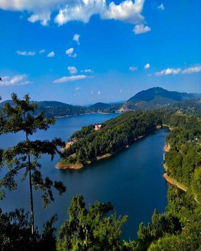
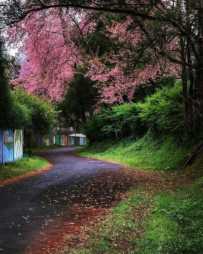
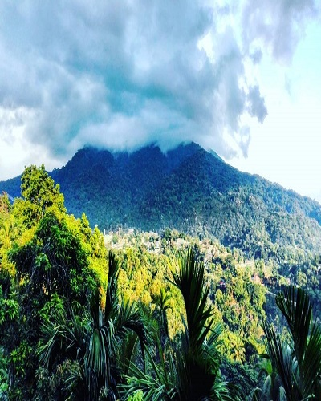
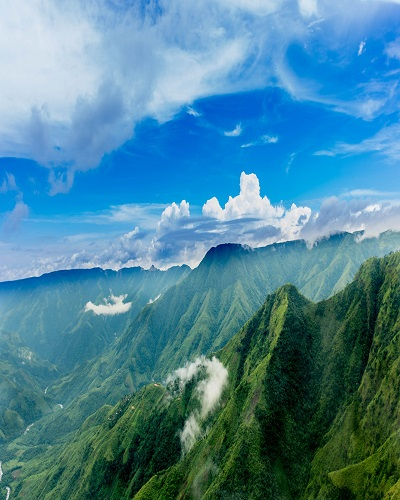

The best season to visit West Garo Hills is the winter season and the onset of summer season. The temperature remains comfortable and is apt for sightseeing. The best months to visit are October to May.Read More
Garo Hills
Jaintia Hills
The best season to visit Jaintia Hills is the summer season and the onset of monsoon season.The best months to visit are March to June. Winters approach Jaintia Hills in October and lasts till February.Read More
Jaintia Hills

Jowai
October to November & March to July is Best Season to Visit Jowai. Being an extremely wet region, October - November and March - June are the best months to visit Jowai to explore its beauty.Read More
Jowai
Kyllang Rock
Best time to Visit – October to April is a good time to explore Lum Kyllang or Kyllang rock since the weather is clear and the landscape is dry and friendlier to explore. Monsoon conditions make the climb slippery and dangerous.Read More
Kyllang Rock
Mawsmai Caves
The best time to visit the cave is post monsoons as it is filled with water during monsoon.Read More
Mawsmai Caves

Mawsynram
The best time to visit Mawsynram is between the months of September and November.Read More
Mawsynram
Nohkalikai Falls
Monsoon season is the best time to visit Nohkalikai when the falls are in their full form.Read More
Nohkalikai Falls

Nongpoh
February-December is the best months to explore this place.Read More
Nongpoh

Shillong
The best months to visit Shillong are between September and May.Read More
Shillong

Tura
The best time to visit Tura is during the winter period from February to March.Read More
Tura
Umiam Lake
The best time to Visit Umiam Lake is between March and June as the weather is pleasant to explore the region.Read More
Umiam Lake

Williamnagar
October-February is the best time to visit this place. Ideally, the best time to visit would be during the winter season.Read More
Williamnagar
Balpakram National Park
The most ideal time to visit Balpakram National Park is during the autumn and winter months.Read More
Balpakram National Park
Double Decker Living Root Bridge
The best time to visit the village and the Living Root Bridge is during the monsoon season when the natural beauty of the village at its best.Read More